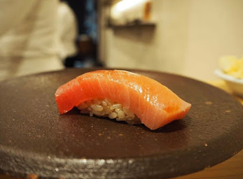
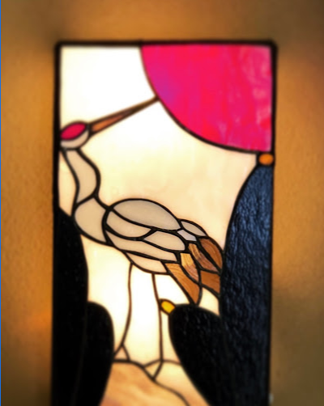

寿司

Sushi ranmaru
3 Chome-16-2 Shimomeguro, Meguro City, Tokyo 153-0064, Japan
lunch:8000￥
https://www.instagram.com/ranmaru0201/

Sushi Ichibun
2 Chome-13-19 Ginza, Chuo City, Tokyo 104-0061, Japan
17000￥
https://pocket-concierge.jp/ja/restaurants/244363